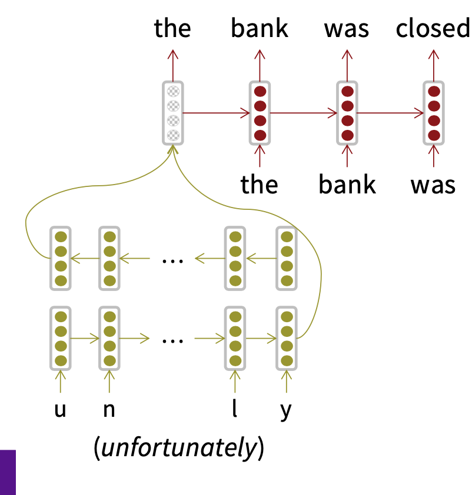
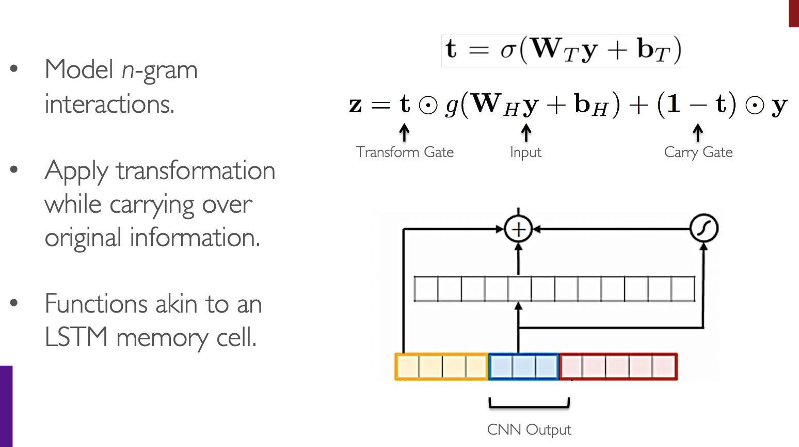

Character-Level Models
- Word embeddings can be composed from character embeddings
- Generates embeddings for unknown words
- Similar spellings share similar embeddings
- Solves OOV problem
- Motivation
- Derive a powerful,robust language model effective across a variety of languages.
- Encode subword relatedness:eventful,eventfully, uneventful...
- Address rare-word problem of prior models.
- Obtain comparable expressivity with fewer parameters.
Two trends
- Same architecture as forword-level model but use smaller units: “word pieces”
- Hybrid architectures: Main model has words; something else for characters
Byte Pair Encoding
A word segmentation algorithm: - Start with a vocabulary of characters - Most frequent ngram pairs -> a new ngram - Have a target vocabulary size and stop when you reach it - Do deterministic longest piece segmentation of words - Segmentation is only within words identified by some prior tokenizer
For example, all the words in our documents database and their frequency are > {'l o w': 5, 'l o w e r': 2, 'n e w e s t': 6, 'w i d e s t': 3}
We can initialize our vocabulary library as:
> { 'l', 'o', 'w', 'e', 'r', 'n', 'w', 's', 't', 'i', 'd'}
The most frequent ngram pair is ('e','s') and its count is 9. So we add the 'es' to our vocabulary library.
Our documents database now is: > {'l o w': 5, 'l o w e r': 2, 'n e w es t': 6, 'w i d es t': 3}.
Our vocabulary library now is: > { 'l', 'o', 'w', 'e', 'r', 'n', 'w', 's', 't', 'i', 'd', 'es'}
Again, the most frequent ngram pair is ('es','t') and its count is 9，So we add the 'est' to our vocabulary library.
Our documents database now is: > {'l o w': 5, 'l o w e r': 2, 'n e w est': 6, 'w i d est': 3}
Our vocabulary library now is: > { 'l', 'o', 'w', 'e', 'r', 'n', 'w', 's', 't', 'i', 'd', 'es','est'}
the rest can be done in the same manner. We can set a threshold of total count of our vocabulary library. By doing so, we can use BPE to construct a vocabulary library to represent all the words based on subword unit.
Google NMT(GNMT) uses a variant of this: - V1: wordpiece model (Word piece model tokenizes inside words) - V2: sentencepiece model (Sentence piece model works from raw text)
Character-level to build word-level
- Convolution over characters to generate word embeddings

- Character-based LSTM to build word representation

CS224n Assignment5
Character-based convolutional encoder for NMT.

- Convert word to character indices. We have a word \(x\) (e.g. Anarchy in above figure) that we wish to represent. Assume we have a predefined ‘vocabulary’ of characters (for example, all lowercase letters, uppercase letters, numbers, and some punctuation). By looking up the index of each character, we can thus represent the length-l word x as a vector of integers: \[x = \left[ c_1,c_2,\cdots,c_l \right ] \in \mathbb{Z}^{l}\] where each \(c_i\) is an integer index into the character vocabulary.
- Padding and embedding lookup. Using a special
‘character’, we pad (or truncate) every word so that it has length \(m_word\) (this is some predefined hyperparameter representing maximum word length): \[x_{padded} = \left [ c_1,c_2,\cdots,c_{m_{word}} \right ] \in \mathbb{Z}^{m_{word}}\] 1
2
3
4
5
6
7
8
9
10
11
12
13
14
15
16
17
18
19
20
21
22
23
24
25
26
27
28
29
30
31
32
33
34
35
36
37
38
39
40
41
42
43
44
45
46
47
48
49
50
51
52
53
54
55
56
57
58
59
60
61
62
63
64
65
66
67
68
69
70
71
72
73
74
75
76
77
78
79
80
81
82
83
84
85
86
87
88
89def pad_sents_char(sents, char_pad_token):
""" Pad list of sentences according to the longest sentence in the batch and max_word_length.
@param sents (list[list[list[int]]]): list of sentences, result of `words2charindices()`
from `vocab.py`
@param char_pad_token (int): index of the character-padding token
@returns sents_padded (list[list[list[int]]]): list of sentences where sentences/words shorter
than the max length sentence/word are padded out with the appropriate pad token, such that
each sentence in the batch now has same number of words and each word has an equal
number of characters
Output shape: (batch_size, max_sentence_length, max_word_length)
"""
# Words longer than 21 characters should be truncated
max_word_length = 21
### YOUR CODE HERE for part 1f
### TODO:
### Perform necessary padding to the sentences in the batch similar to the pad_sents()
### method below using the padding character from the arguments. You should ensure all
### sentences have the same number of words and each word has the same number of
### characters.
### Set padding words to a `max_word_length` sized vector of padding characters.
###
### You should NOT use the method `pad_sents()` below because of the way it handles
### padding and unknown words.
sents_padded = []
max_sent_len = max([len(sent) for sent in sents])
for sent in sents:
sent = sent + [[] for i in range(max_sent_len - len(sent))]
assert len(sent) == max_sent_len
tmp_sent = []
for word in sent:
word = word[:max_word_length]
diff = max_word_length - len(word)
word = word + [char_pad_token] * diff
assert len(word) == max_word_length
tmp_sent.append(word)
sents_padded.append(tmp_sent)
### END YOUR CODE
return sents_padded
class VocabEntry(object):
# ......
def words2charindices(self, sents):
""" Convert list of sentences of words into list of list of list of character indices.
@param sents (list[list[str]]): sentence(s) in words
@return word_ids (list[list[list[int]]]): sentence(s) in indices
"""
### YOUR CODE HERE for part 1e
### TODO:
### This method should convert characters in the input sentences into their
### corresponding character indices using the character vocabulary char2id
### defined above.
###
### You must prepend each word with the `start_of_word` character and append
### with the `end_of_word` character.
word_ids = []
for sent in sents:
sent_chars_id = []
for word in sent:
sent_chars_id.append([1] + [ self.char2id.get(char,3) for char in word ] + [2])
word_ids.append(sent_chars_id)
return word_ids
def to_input_tensor_char(self, sents: List[List[str]], device: torch.device) -> torch.Tensor:
""" Convert list of sentences (words) into tensor with necessary padding for
shorter sentences.
@param sents (List[List[str]]): list of sentences (words)
@param device: device on which to load the tensor, i.e. CPU or GPU
@returns sents_var: tensor of (max_sentence_length, batch_size, max_word_length)
"""
### YOUR CODE HERE for part 1g
### TODO:
### Connect `words2charindices()` and `pad_sents_char()` which you've defined in
### previous parts
char_sents = self.words2charindices(sents)
padded_char_sents = pad_sents_char(char_sents, 0)
sents_var = torch.tensor(padded_char_sents, dtype=torch.int8, device= device)
sents_var = sents_var.permute(1,0,2)
return sents_var
# ...... - For each of these characters \(c_i\), we lookup a dense character embedding (which has shape \(e_{char}\)). This yields a tensor \(x_{emb}\): \[x_{emb} = CharEmbedding(X_{padded}) \in \mathbb{R}^{m_{word} \times e_{char}}\] We'll reshape \(x_{emb}\) to obtain \(x_{reshaped} in \mathbb{R}^{e_{char} \times m_{word}}\) before feeding into the convolutional network.
- Convolutional network. To combine these character embeddings, we’ll use 1-dimensional convolutions. The convolutional layer has two hyperparameters: the kernel size \(k\) (also called window size), which dictates the size of the window used to compute features, and the number of filters \(f\), (also called number of output features or number of output channels). The convolutional layer has a weight matrix \(W \in \mathbb{R}^{f \times e_{char} \times k}\) and a bias vector \(b \in \mathbb{R}^{f}\). Overall this produces output \(x_{conv}\). \[x_{conv} = Conv1D(x_{reshaped}) \in \mathbb{R}^{f \times {m_{word} - k + 1}}\] For our application, we’ll set \(f\) to be equal to \(e_{word}\), the size of the final word embedding for word x. Therefore, \[x_{conv} \in \mathbb{R}^{e_{word} \times (m_{word} - k + 1)}\] Finally, we apply the
ReLUfunction to \(x_{conv}\), then use max-pooling to reduce this to a single vector \(x_{conv_out} \in \mathbb{R}^{e_{word}}\), which is the final output of the Convolutional Network: \[x_{conv\_out} = MaxPool(ReLU(x_{conv})) \in \mathbb{R}^{e_{word}}\]1
2
3
4
5
6
7
8
9
10
11
12
13
14
15
16
17
18
19
20
21
22
23
24
25
26
27
28
29
30
31
32
33
34
35
36
37
38
39
40
41
42
43
44
45
46
47
48
49
50
51
52
53
54
55
56
57
58
59
60
61#!/usr/bin/env python3
# -*- coding: utf-8 -*-
"""
CS224N 2018-19: Homework 5
"""
### YOUR CODE HERE for part 1i
import torch
import torch.nn as nn
import torch.nn.functional as F
### END YOUR CODE
class CNN(nn.Module):
"""
Init CNN which is a 1-D cnn.
@param embed_size (int): embedding size of char (dimensionality)
@param k: kernel size, also called window size
@param f: number of filters, should be embed_size of word
"""
def __init__(self,
embed_size: int = 50,
m_word: int = 21,
k: int = 5,
f: int = 50):
"""
Init CNN which is a 1-D cnn.
@param embed_size (int): embedding size of char (dimensionality)
@param k: kernel size, also called window size
@param f: number of filters, should be embed_size of word
"""
super(CNN, self).__init__()
self.conv1d = nn.Conv1d(in_channels = embed_size,
out_channels = f,
kernel_size = k)
self.maxpool = nn.MaxPool1d(kernel_size = m_word - k + 1)
def forward(self, X_reshaped: torch.Tensor) -> torch.Tensor:
"""
map from X_reshaped to X_conv_out
@param X_reshaped (Tensor): Tensor of char-level embedding with shape (
batch_size, e_char, m_word), where e_char = embed_size of char,
m_word = max_word_length.
@return X_conv_out (Tensor): Tensor of word-level embedding with shape (max_sentence_length,
batch_size)
"""
X_conv = self.conv1d(X_reshaped)
# print(X_conv.size())
X_conv_out = self.maxpool(F.relu(X_conv))
# print(X_conv_out.size())
return X_conv_out.squeeze(-1) - Highway layer and dropout. Highway Networks6 have a skip-connection controlled by a dynamic gate. Given the input \(x_{conv\\_out} \in \mathbb{R}^{e_{word}}\), we compute:
 \[ \begin{align} & x_{proj} = RELU(W_{proj}x_{conv\_cout} + b_{proj}) \quad \in \mathbb{R}^{e_{word}} \\ & x_{gate} = \sigma(W_{gate}x_{conv\_out} + b_{gate}) \quad \in \mathbb{R}^{e_{word}} \\ & x_{highway} = x_{gate} \circ x_{proj} + ( 1 - x_{gate}) \circ x_{conv\_out} \quad \in \mathbb{R}^{e_{word}}\\ & x_{word_emb} = Dropout(x_{highway}) \quad \in \mathbb{R}^{e_{word}} \end{align} \] Where \(W_{proj},W_{gate} \in \mathbb{R}^{e_{word} \times e_{word}}\), and \(\circ\) denotes element-wise multiplication.Figure from cs224n. Highway Network (Srivastava et al. 2015)1
2
3
4
5
6
7
8
9
10
11
12
13
14
15
16
17
18
19
20
21
22
23
24
25
26
27
28
29
30
31
32
33
34
35
36
37
38
39
40
41
42
43
44
45
46#!/usr/bin/env python3
# -*- coding: utf-8 -*-
"""
CS224N 2018-19: Homework 5
"""
import torch
import torch.nn as nn
import torch.nn.functional as F
### YOUR CODE HERE for part 1h
class Highway(nn.Module):
""" Highway network for ConvNN
- Relu
- Sigmoid
- gating mechanism from LSTM
"""
def __init__(self,embed_size):
""" Init Higway network
@param embed_size (int): Embedding size of word, in handout,
it's e_{word} (dimensionality)
"""
super(Highway, self).__init__()
self.projection = nn.Linear(embed_size,embed_size,bias = True)
self.gate = nn.Linear(embed_size,embed_size, bias = True)
def forward(self, X_conv_out):
"""
Take mini-batch of sentence of ConvNN
@param X_conv_out (Tensor): Tensor with shape (max_sentence_length, batch_size, embed_size)
@return X_highway (Tensor): combinded output with shape (max_sentence_length, batch_size, embed_size)
"""
X_proj = F.relu(self.projection(X_conv_out))
X_gate = torch.sigmoid(self.gate(X_conv_out))
X_highway = torch.mul(X_gate, X_proj) + torch.mul((1 - X_gate),X_conv_out)
return X_highway
### END YOUR CODE - Combine above steps together to get our Character-based word embedding model.
1
2
3
4
5
6
7
8
9
10
11
12
13
14
15
16
17
18
19
20
21
22
23
24
25
26
27
28
29
30
31
32
33
34
35
36
37
38
39
40
41
42
43
44
45
46
47
48
49
50
51
52
53
54
55
56
57
58
59
60
61
62
63
64
65
66
67
68
69
70
71
72
73
74
75
76
77
78
79
80
81
82
83
84
85
86#!/usr/bin/env python3
# -*- coding: utf-8 -*-
"""
CS224N 2018-19: Homework 5
model_embeddings.py: Embeddings for the NMT model
Pencheng Yin <pcyin@cs.cmu.edu>
Sahil Chopra <schopra8@stanford.edu>
Anand Dhoot <anandd@stanford.edu>
Michael Hahn <mhahn2@stanford.edu>
"""
import torch.nn as nn
import torch
# Do not change these imports; your module names should be
# `CNN` in the file `cnn.py`
# `Highway` in the file `highway.py`
# Uncomment the following two imports once you're ready to run part 1(j)
from cnn import CNN
from highway import Highway
# End "do not change"
class ModelEmbeddings(nn.Module):
"""
Class that converts input words to their CNN-based embeddings.
"""
def __init__(self, embed_size, vocab):
"""
Init the Embedding layer for one language
@param embed_size (int): Embedding size (dimensionality) for the output
@param vocab (VocabEntry): VocabEntry object. See vocab.py for documentation.
"""
super(ModelEmbeddings, self).__init__()
## A4 code
# pad_token_idx = vocab.src['<pad>']
# self.embeddings = nn.Embedding(len(vocab.src), embed_size, padding_idx=pad_token_idx)
## End A4 code
### YOUR CODE HERE for part 1j
pad_token_idx = vocab.char2id['<pad>']
self.embed_size = embed_size
char_embed_size = 50
self.char_embedding = nn.Embedding(len(vocab.char2id),
char_embed_size,
pad_token_idx)
self.convNN = CNN(f=self.embed_size)
self.highway = Highway(embed_size=self.embed_size)
self.dropout = nn.Dropout(p=0.3)
### END YOUR CODE
def forward(self, input):
"""
Looks up character-based CNN embeddings for the words in a batch of sentences.
@param input: Tensor of integers of shape (sentence_length, batch_size, max_word_length) where
each integer is an index into the character vocabulary
@param output: Tensor of shape (sentence_length, batch_size, embed_size), containing the
CNN-based embeddings for each word of the sentences in the batch
"""
## A4 code
# output = self.embeddings(input)
# return output
## End A4 code
### YOUR CODE HERE for part 1j
X_word_emb_list = []
for X_padded in input:
# (batch_size,max_word_length) -> (batch_size,max_word_length,embed_size)
X_emb = self.char_embedding(X_padded)
# print(X_emb.size())
X_reshaped = X_emb.permute(0,2,1)
X_conv_out = self.convNN(X_reshaped)
X_highway = self.highway(X_conv_out)
X_word_emb = self.dropout(X_highway)
X_word_emb_list.append(X_word_emb)
# (sentence_length, batch_size, embed_size)
X_word_emb = torch.stack(X_word_emb_list, dim=0)
return X_word_emb
### END YOUR CODE
Character-based LSTM decoder for NMT
We will now add a LSTM-based character-level decoder to our NMT system. The main idea is that when our word-level decoder produces and<UNK> token, we run our character-level decoder (which you can think of as a character-level conditional language model) to instead generate the target word one character at a time, as shown in below figure. This will help us to produce rare and out-of-vocabulary target words.

We now describe the model in three sections: 1. Forward computation of Character Decoder: Given a sequence of integers \(x_i,\cdots,x_n \in \mathbb{Z}\) representing a sequence of characters, we lookup their character embeddings \(x_i,\cdots,x_n \in \mathbb{Z}^{e_{char}}\) and pass these as input in to the(unidirectional)LSTM,obtaining hidden states \(h1, \cdots, h_n\) and cell states \(c_1, \cdots, c_n\) \[h_t,c_t = CharDecoderLSTM(x_t,h_{t-1},c_{t-1}) \quad \text{where} \quad h_t,c_t \in \mathbb{R}^{h}\] where h is the hidden size of the CharDecoderLSTM. The initial hidden and cell states \(h_0\) and \(c_0\) are both set to the combined output vector (attentioned) for the current timestep of the main word-level NMT decoder. For every timestep \(t \in { 1, \cdots, n }\) we compute scores (also called logits) \(s_t \in \mathbb{R}^{V_{char}}\) \[s_t = W_{dec}h_t + b_{dec} \in \mathbb{R}^{V_{char}}\] Where the weight matrix \(W_{dec} \in \mathbb{R}^{V_{char} \times h}\) and the bias vector \(b_{dec} \in \mathbb{R}^{V_{char}}\). If we passed \(s_t\) through a softmax function, we would have the probability distribution for the next character in the sequence.
Training of Character Decoder When we train the NMT system, we train the character decoder on every word in the target sentence (not just the words represented by
). For example, on a particular step of the main NMT decoder, if the target word is music then the input sequence for the CharDecoderLSTM is \([x_1,...,x_n]\) = [ ,m,u,s,i,c] and the target sequence for the CharDecoderLSTM is \([x_{2}, . . . , x_{n+1}]\) = [m,u,s,i,c, ]. We pass the input sequence \(x_1, \cdots, x_n\), along with the initial states \(h_0\) and \(c_0\) obtained from the combined output vector) into the CharDecoderLSTM, thus obtaining scores \(s_1,\cdots, s_n\) which we will compare to the target sequence \(x_2,\cdots, x_{n+1}\). We optimize with respect to sum of the cross-entropy loss: \[p_t = softmax(s_t) \in \mathbb{R}^{V_{char}}\] \[loss_{char\_dec} = -\sum_{t=1}^{n}log p_t(x_{t+1})\] Decoding from the Character Decoder t test time, first we produce a translation from our word- based NMT system in the usual way (e.g. a decoding algorithm like beam search). If the translation contains any
tokens, then for each of those positions, we use the word-based decoder’s combined output vector to initialize the CharDecoderLSTM initial \(h_0\) and \(c_0\), then use CharDecoderLSTM to generate a sequence of characters. To generate the sequence of characters, we use the greedy decoding algorithm, which repeatedly chooses the most probable next character, until either the token is produced or we reach a predetermined max length. The algorithm is given below, for a single example (not batched).  Figure from cs224n. Greedy Decoding
Figure from cs224n. Greedy Decoding
1 | #!/usr/bin/env python3 |
Reference
- Course note and slides of cs224n